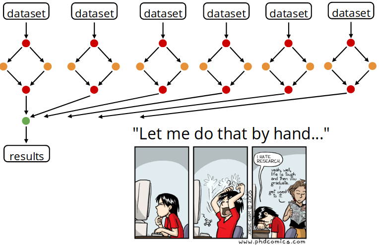

8. Introduction
8.1. Why invest time in a workflow management system?
hate_research
A common pattern in scientific computing involves the execution of many computational or data manipulation tasks. Those tasks are usually coupled, i.e., data produced by of one task are consumed by one or more other tasks. Thus execution of such tasks often requires a non-trivial coordination (orchestration) to satisfy their data dependencies.
A workflow management system (WMS) is a piece of software that sets up, performs and monitors a defined sequence of computational tasks (i.e. “a workflow”).
The Rationale
Snakemake is a workflow management system that helps you build pipelines between the scripts of your project.
Snakemake allows you to create a set of rules, each one defining a “step” of your analysis. Rules can either use shell commands, plain Python code or external Python or R scripts to create output files from input files.
For each step you need to provide:
- Input : Data files, scripts, executables or any other files.
- Expected output. It’s not required to list all possible outputs. Just those that you want to monitor or that are used by a subsequent step as inputs.
- A command to run to process the input and create the output.
rule myname:
input: ['myinput1', 'myinput2']
output: ['myoutput']
shell: 'Some command to go from in to out'
The rules need to be written in a file called “Snakefile”.
9.1. Snakemake Advantages:
- Memory: stores the architecture of the work and allows you to rapidly perform a complete or partial analysis.
- Portability: if built in a user-sensitive way, anyone working on the same analysis can obtain every results.
- Modularity: as a rule is only a path between an input and an output, if one method or technique used in the analysis needs to be updated or modified, it can be replaced by a new rule with the same output. It allows a parallel comparison of different techniques in a very simple way.
- Reproducibility: if you’re analysing a data sample collected by the same experiment in different years of exploitation and you plan to analyse data samples not even collected yet, Snakemake is a simple solution to perform the same analysis to different data sets.
- Snakemake workflows can be easily executed on workstations, clusters, the grid, and in the cloud without modification. The job scheduling can be constrained by arbitrary resources like e.g. available CPU cores, memory or GPUs.
- Snakemake can automatically deploy required software dependencies of a workflow using Conda or Singularity.
- Snakemake can use Amazon S3, Google Storage, Dropbox, FTP, WebDAV, SFTP and iRODS to access input or output files and further access input files via HTTP and HTTPS.
Snakemake Paper
Dockers with Nextflow documentation is
here